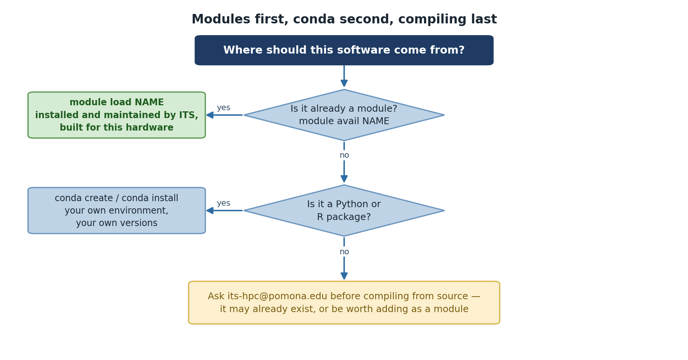

Finding and Loading Modules
Last updated on 2026-08-27 | Edit this page
Overview
Questions
- How do I find specific software on Sagehen HPC?
- How do I load and unload modules?
- How do I learn what a module does before loading it?
- What if I need software that isn’t available?
Objectives
- Use
module availwith search patterns to find software - Load and unload modules with
module loadandmodule unload - Use
module helpandmodule showto inspect modules - Know what to do if software isn’t available
Searching for Software
On a cluster with hundreds of modules, finding specific software efficiently is essential.
Built-in filtering
Lmod can filter the listing itself – pass a search string to
module avail:
The match is a substring match against the whole module name
and version, so a single letter matches far too much – on
Sagehen this returns not just r/4.5.1 but also
ansys/2023r1, apptainer,
fmriprep, rstudio-server, rust,
trimmomatic, and dozens more, all because they contain an
“r” somewhere. Use a longer, more specific string:
module avail conda is a good example of why searching
matters: it finds both anaconda3 and
miniconda3. There is no standalone
python module on Sagehen – searching for
python finds nothing, because Python is provided
inside the conda distributions. When a direct name search comes
up empty, think about what the software might ship inside.
Deeper searches: spider and keyword
BASH
$ module spider gaussian # every version of a module, plus how to load it
$ module keyword chemistry # searches module descriptions, not just namesmodule spider knows about every module and version on
the system, and module keyword searches the descriptive
text – useful when you don’t know the package’s exact name.

Why not just pipe to grep?
You’ll see module avail -t | grep name suggested online,
but on Sagehen it returns nothing: Lmod prints the listing to
standard error rather than standard output, and this
Lmod version treats a trailing -t as a search
pattern rather than a flag (hence the confusing
No module(s) or extension(s) found!). If you want a grep
pipeline, the options must come before the subcommand and
stderr must be redirected:
The built-in filters above are simpler and always work – prefer them.
Loading and Unloading Modules
Your first module load
Now check what modules you have loaded:
To see what this module actually changed:
Unloading modules
When you’re done with software, unload it:
python now refers to the system Python (if it exists) or
isn’t available.
Key Commands Summary
| Command | Purpose |
|---|---|
module avail |
List all available modules |
module load <name> |
Load a module |
module list |
Show currently loaded modules |
module unload <name> |
Unload a module |
which <program> |
Show the full path to a program |
Learning What a Module Does
Check Before You Load
Always use module help before loading an
unfamiliar module. This prevents surprises and shows you what
dependencies will be automatically loaded.
Using module help
This prints whatever help text the module’s packager provided – typically a short description of the software, the version, and any usage notes. The amount of detail varies from module to module.
Understanding module dependencies
Some modules automatically load other modules they depend on (for
example, an MPI library or a maths library). When that happens,
module list after a single module load will
show more than one loaded module. That is normal – unloading
the module you asked for also removes what it pulled in.
When Software Isn’t Available
If you can’t find the software you need:
-
Double-check your search with
module avail nameandmodule spider name - Check the Sagehen documentation for software inventory
-
Request installation by emailing its-hpc@pomona.edu
with:
- Software name and version
- Research purpose
- License information (open-source, commercial, etc.)
- Links to documentation
BASH
$ module load go
$ module list
Currently Loaded Modules:
1) go/1.23.1
$ which go
/opt/.../go/1.23.1/bin/go
$ module unload go
$ which go
/usr/bin/which: no go in (...)The key insight: after unloading, the command is gone from your
PATH – you fall back to a system-wide copy if one exists,
or to nothing at all.
After module load r:
Currently Loaded Modules:
1) r/4.5.1After module unload r:
No modules loadedIf a module pulls in dependencies when it loads, those dependencies
can remain loaded after you unload it – Lmod treats them cautiously
because other loaded modules might also rely on them. If
module list still shows leftovers you don’t need, unload
them explicitly, or use module purge to clear
everything.
- Use
module availwith search terms orgrepto find software -
module loadactivates software;module unloaddeactivates it - Use
module helpto understand what a module does before loading - Use
module showto see exact environment modifications - Modules can automatically load prerequisites
- If software isn’t available, contact its-hpc@pomona.edu to request it